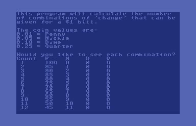
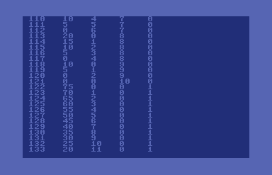
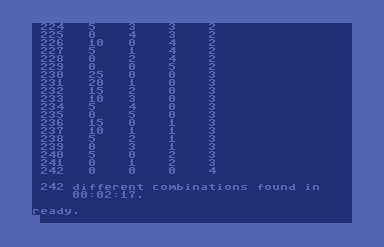

Mike's BASIC Beginnings
Count Change
October 8, 2019
Screen Shots
Program Listing
Comments



×
5 m=100:rem money = $1.00 or 100 pennies 10 print chr$(147);chr$(14);"This program will calculate the number" 11 print "of combinations of 'change' that can be" 12 print "given for a $1 bill." 13 print:print "The coin values are:" 14 print "0.01 = Penny":print "0.05 = Nickle" 15 print "0.10 = Dime":print "0.25 = Quarter" 16 print 20 print "Would you like to see each combination?" 25 get k$:yn=(k$="y"):if k$="" then 25 100 p=m:ti$="000000" 130 q=int(m/25) 140 count=0:ps=1 145 if not yn then poke 53265,peek(53265) and 239:rem screen blank 147 if yn then print "Count P N D Q" 150 for qc=0 to q:d=int((m-qc*25)/10) 160 for dc=0 to d:n=int((m-dc*10)/5) 170 for nc=0 to n:p=m-nc*5 180 for pc=0 to p step 5 190 s=pc+nc*5+dc*10+qc*25 200 if s=m then count=count+1:if yn then gosub 1000 210 next:next:next:next 245 en$=ti$:if not yn then poke 53265, peek(53265) or 16 250 print:print count;"different combinations found in" 260 print tab(len(str$(count))+1); 265 print left$(en$,2);":";mid$(en$,3,2) ;":";right$(en$,2);"." 270 end 1000 print count;tab(6);pc;tab(11);nc ;tab(16);dc;tab(21);qc:return
The goal is to have the computer figure out how many combinations of coins (pennies, nickles, dimes, and quarters) can be used to make $1.00. This was based on BASIC code already submitted for the Sinclair ZX Spectrum.
After directly porting the Spectrum code to Commodore BASIC, I was disappointed to see that the algorithm took 46 minutes and 37 seconds to achieve a solution. After thinking about the problem, I was able to optimize the code and get the processing time down to less than 2 minutes and 20 seconds. Algorithm optimizations included things like counting pennies in multiples of 5 (since every other denomination is a multiple of 5) and looping through remainder values instead of processing combinations that are impossible.
The question of "Would you like to see each combination?" is an optional optimization. Printing each combination adds to the overall processing time. Choosing "no" causes the video processor to be switched off (the screen goes blank) which gives the CPU additional cycles per second. This achieves a total processing time of less than 2 minutes on a US/NTSC Commodore 64.